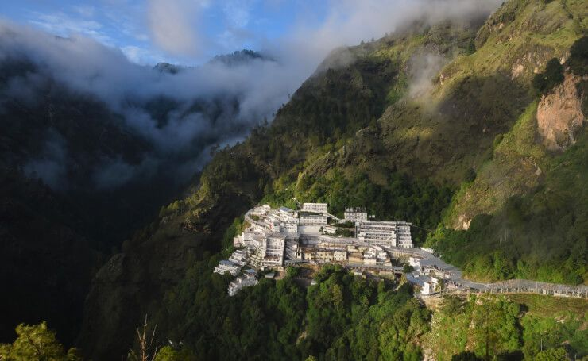
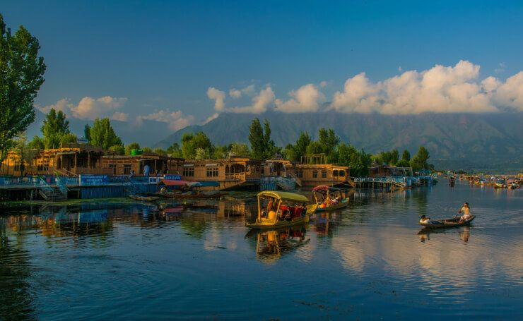
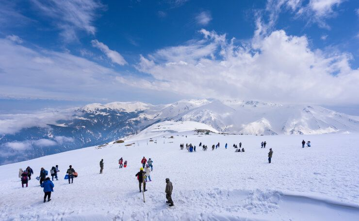

THIS IS SOLID STATE
Top tourist destination in Jammu & Kasmir
Vaishno Devi
Vaishno Devi, a major Hindu pilgrimage destination in India. The temple stands on the Trikuta Hills in Jammu. The Mother Goddess, who is the main deity, is believed to fulfil the wishes of her devotees.
Learn MoreSrinagar
Srinagar finds a place on this list because it is one of the most famous tourist destinations in Jammu and Kashmir as well as the top honeymoon destination. The presence of many Mughal Gardens, religious & historical sites as well as Dal & Nageen Lakes has led Srinagar to being called the “Land of Gardens and Lakes.” Among the other things that will surprise you, one is the floating vegetable market on Dal Lake. The largest Tulip gardens in Asia are also in Srinagar.
Learn MoreGulmarg
Gulmarg has everything going for it: snowdressed mountains, greenery, lakes, pine & fir forests and different types of flowers. It is snug in a valley in the Pir Panjal Range. Its name means, the meadows of flowers, and you will come across a lot of meadows decorated with daisies. Most of all though, Gulmarg is the best skiing destination in Asia, has the highest green golf course in the world as well as the highest cable car project.
Learn More